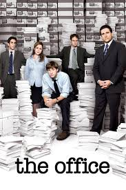

Parrafos o salto de parrafo
Una serie de televisión es una producción audiovisual compuesta por varios episodios que se transmiten generalmente en televisión o plataformas de streaming. Cada episodio suele contar una parte de una historia más amplia o presentar situaciones relacionadas, y juntos forman una temporada o varias temporadas.
Esto es una prueba
| Videojuegos | ||
|---|---|---|
| Dls | Cuphead | Fifa 22 |
|
|
|
|
| Series y peliculas | ||
|---|---|---|
| La venganza de un asesino | The office | Ted |
|  |

|
|
Una serie de televisión es una producción audiovisual compuesta por varios episodios que se transmiten generalmente en televisión o plataformas de streaming.